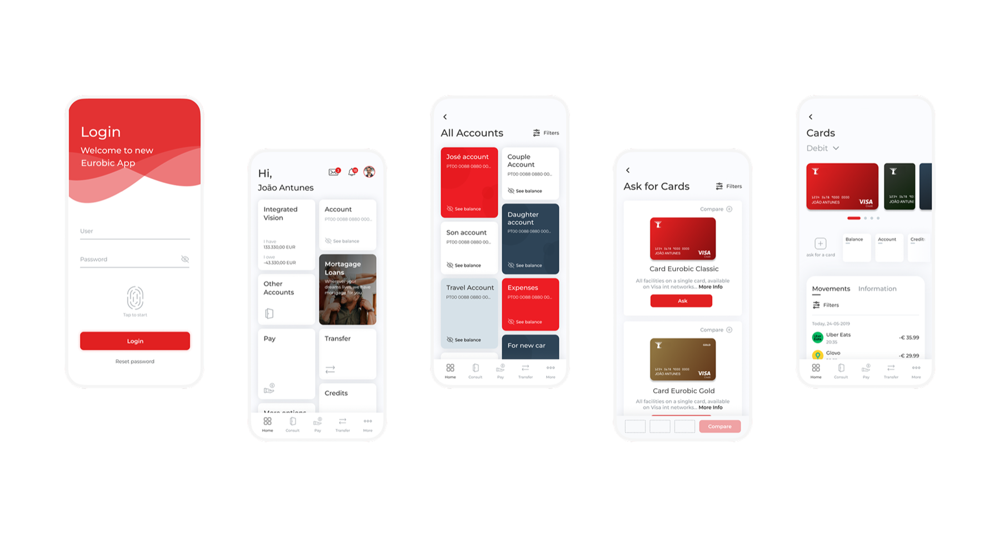

Homebanking for all ages
A modern, clean redesign of EuroBic's web and mobile banking — contemporary and approachable, yet easy to use for people of every age and technical level.
Modern banking
for all ages
The brief was simple to state and hard to do: create a modern, clean design with more useful functions for EuroBic clients and workers. The homebanking and mobile app had to bring a different ambient — contemporary and approachable — while staying easy to use for people of all ages.
That meant redesigning both web and mobile without sacrificing the legibility and predictability that less technical users depend on.
The redesign introduced a cleaner visual language, simplified navigation, and more useful functions for both clients and bank workers. Building on OutSystems patterns ensured consistency and development efficiency.
The result was a homebanking experience with a different ambient — modern, approachable, and designed to serve users regardless of age or technical literacy.
Decisions &
rationale
Clarity over density
Generous whitespace and clear typography keep each screen scannable. For older users it reduces overwhelm; for everyone it makes the primary action obvious.
Simplified navigation
Related functions grouped and the structure flattened, so common tasks take fewer steps and fewer decisions.
OutSystems foundation
Building on established component patterns kept the experience consistent and development efficient — design and delivery speaking the same language.
Accessible by default
Predictable layouts, strong contrast, and consistent patterns meant accessibility was built into the system rather than bolted on at the end.
A documented
visual language
The redesign was backed by a style guide so the look and feel stayed consistent across web, mobile, and every team touching the product.
Typeface — Montserrat. A modern, characterful typeface used in Semibold for emphasis and Regular for body, chosen to give the app personality while staying highly legible.
Discovery reframed the brief from "make it look modern" to "make it modern and usable by everyone." That distinction drove the simplified navigation, clearer hierarchy, and generous spacing.
The user base spanned a wide range of ages and confidence levels — a full spectrum, not an average user — and that became the constraint everything else answered to.
What was
delivered
